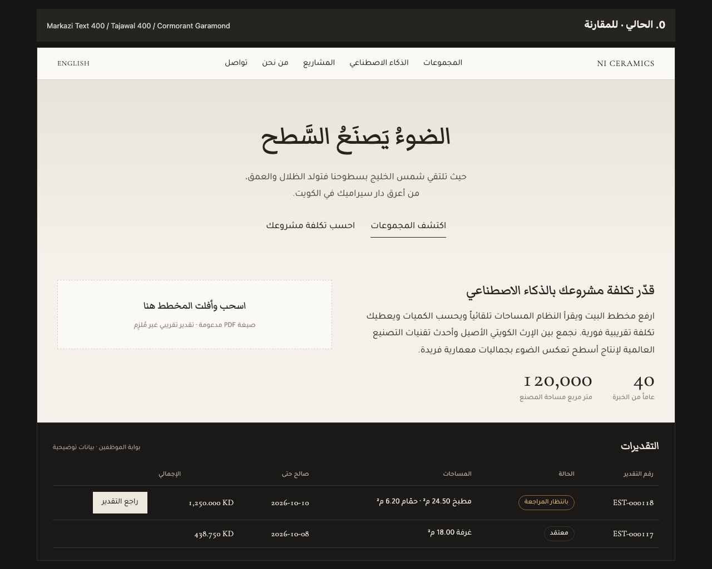
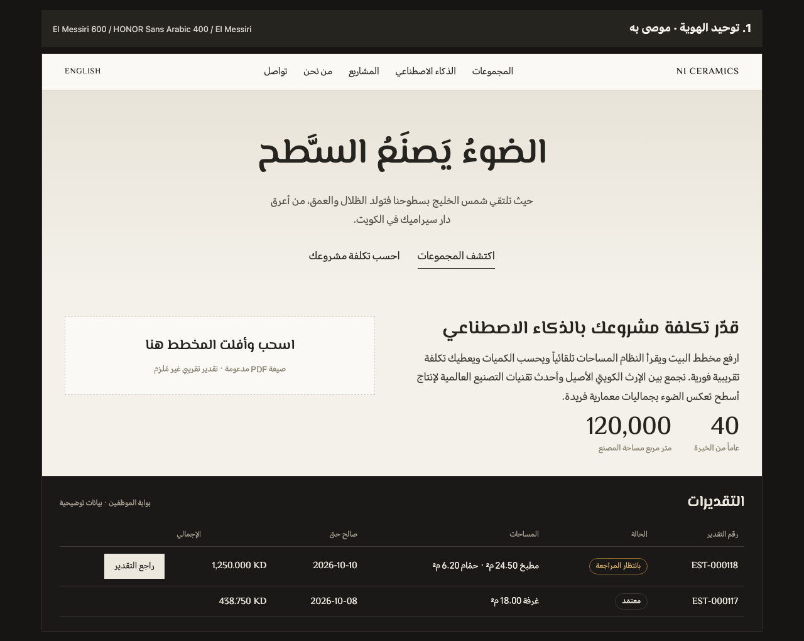
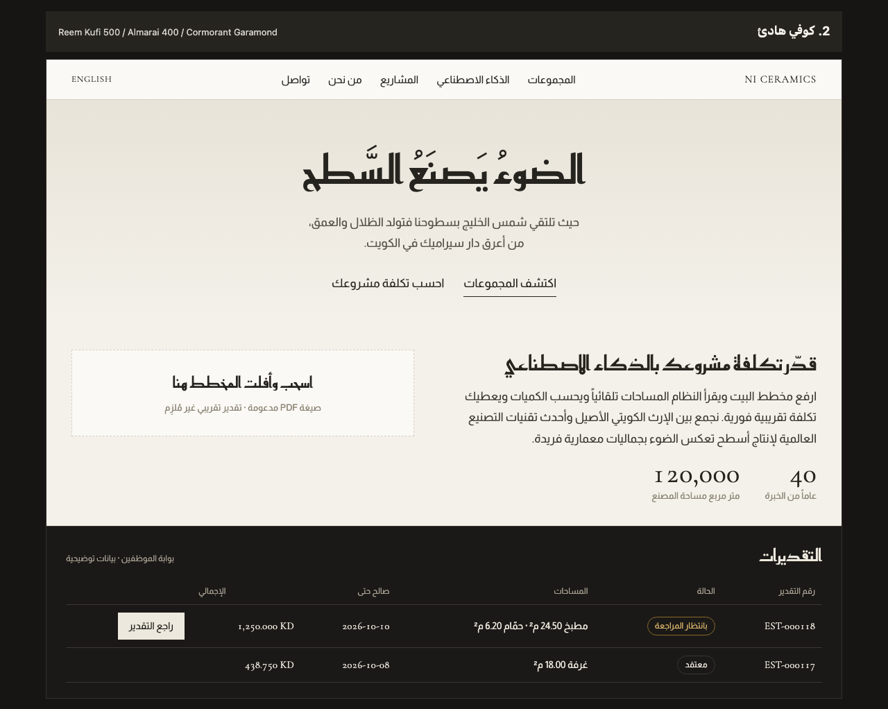
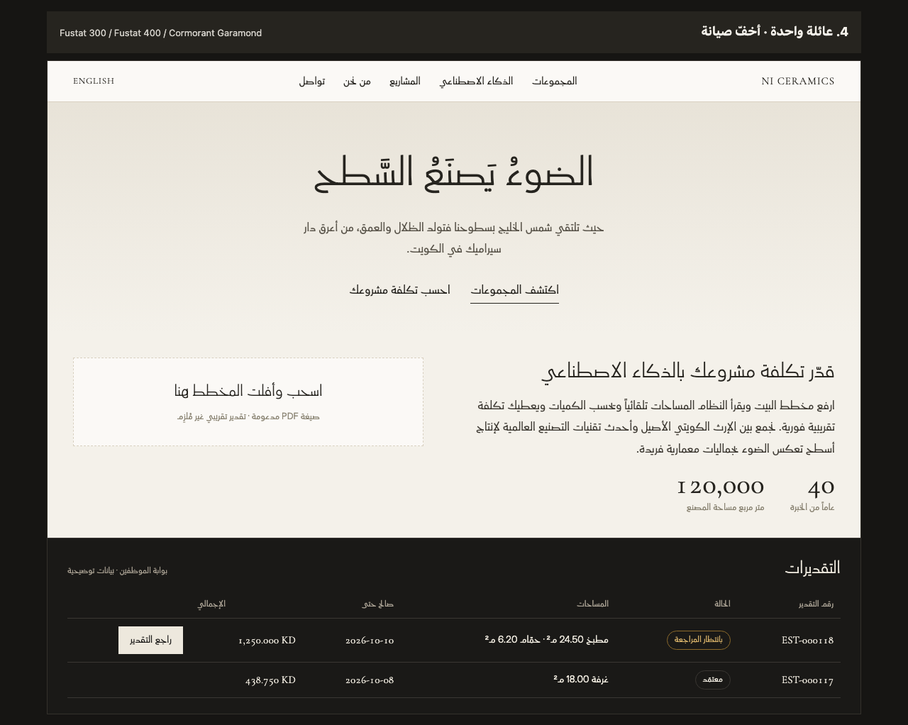
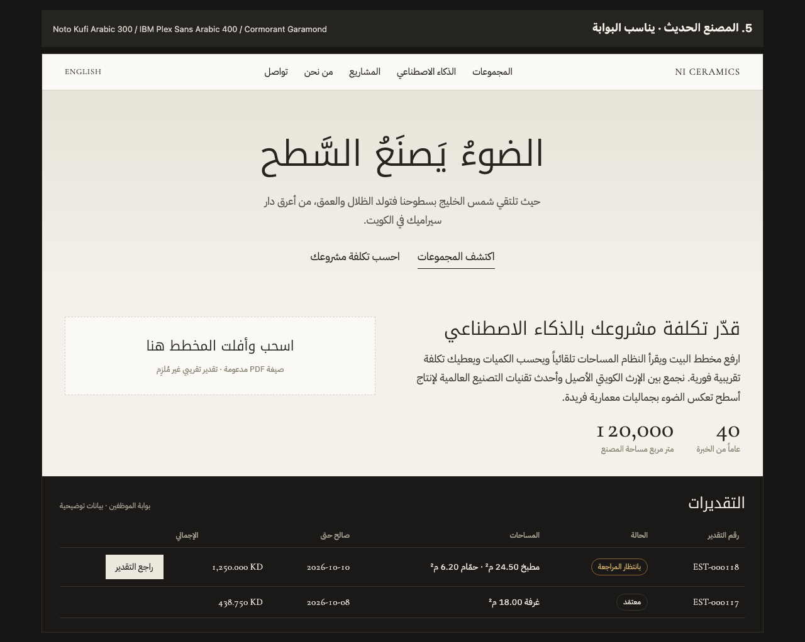

مختبر خطوط NI Ceramics
ستّ عيّنات للخط العربي على نصوص الموقع والبوابة الفعلية: الأولى هي الحالية للمقارنة، والخمس بعدها بدائل مقترحة. كل صورة تعرض الشريط العلوي والعنوان الرئيسي والمتن والأزرار وقسم أداة التقدير، ثم جدولاً من البوابة الداكنة.
٠ · الحالي
Markazi Text 400 · Tajawal 400 · Cormorant Garamond
نسخ كتابي في العناوين وهندسي شائع في المتن؛ للمقارنة فقط.
{kind=link}

١ · توحيد الهوية (الموصى به)
El Messiri 600 · HONOR Sans Arabic 400 · El Messiri
زوج ملف التقدير PDF والوثائق نفسه، فيصير للعلامة صوت واحد من الموقع إلى الورقة.
{kind=link}

٢ · كوفي هادئ
Reem Kufi 500 · Almarai 400 · Cormorant Garamond
هندسة الكوفي تحاكي شبكة البلاط؛ لغة الفخامة الخليجية الهادئة.
{kind=link}

٣ · معاصر مادّي
Kufam 500 · Beiruti 400 · Kufam
زوج غير مستهلك، أبعد ما يكون عن القوالب الجاهزة.

٤ · عائلة واحدة
Fustat 300 للعناوين · Fustat 400 للمتن · Cormorant Garamond
ملف متغيّر واحد؛ عنوان كبير خفيف الوزن هو حركة الفخامة الهادئة.
{kind=link}

٥ · المصنع الحديث
Noto Kufi Arabic 300 · IBM Plex Sans Arabic 400 · Cormorant Garamond
تقني أكثر؛ يخدم كثافة جداول بوابة الموظفين أكثر من الموقع العام.
{kind=link}

الستّ متتالية في صورة واحدة
للمقارنة السريعة بالتمرير.